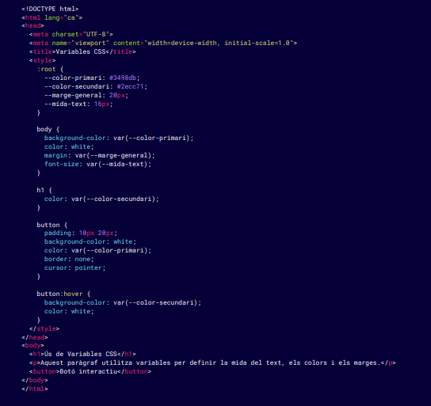

Las variables CSS, también conocidas como Custom Properties, permiten definir valores reutilizables
dentro de un documento CSS. Esta característica facilita mucho la gestión y mantenimiento de grandes
hojas de estilo, ya que puedes centralizar valores como colores, tamaños y espaciados, y reutilizarlos
en varias reglas CSS. Si necesitas hacer un cambio en alguno de estos valores, solo tendrás que
modificar la variable en un lugar, y el cambio se propagará a todas las partes del documento donde se
utilice.
- Definir y utilizar variables CSS: Las variables CSS se definen dentro de cualquier
selector utilizando el prefijo --. Es habitual definirlas en el selector
:root para que estén disponibles globalmente en todo el documento.
:root {
--color-primari: #3498db;
--marge-petit: 10px;
}
body {
background-color: var(--color-primari);
margin: var(--marge-petit);
}
- Beneficios de las variables en grandes proyectos: El uso de variables es
especialmente útil en proyectos grandes o complejos, donde necesitas garantizar la consistencia en
colores, tamaños, fuentes y otros estilos. Cambiar estos valores en múltiples lugares manualmente
puede ser tedioso y propenso a errores. Las variables centralizan estos valores en un solo lugar.
- Mantenibilidad: Puedes modificar fácilmente valores globales como los colores o
los tamaños cambiando solo una variable.
- Reutilización: Las mismas variables se pueden utilizar en cualquier lugar de la
hoja de estilo, ahorrando tiempo y espacio.
- Consistencia: El uso de variables asegura que todos los elementos que dependen
de una variable tengan el mismo estilo.
- Variables CSS con valores por defecto: Puedes proporcionar un valor por defecto a
las variables CSS en caso de que no estén definidas. Esto es útil si quieres asegurarte de que el
diseño funcione incluso si la variable falla o no se encuentra.
h2 {
color: var(--color-primari, black); /* Utilitza negre si --color-primari no està definit */
}
Ejemplo completo con variables CSS:

En este ejemplo: